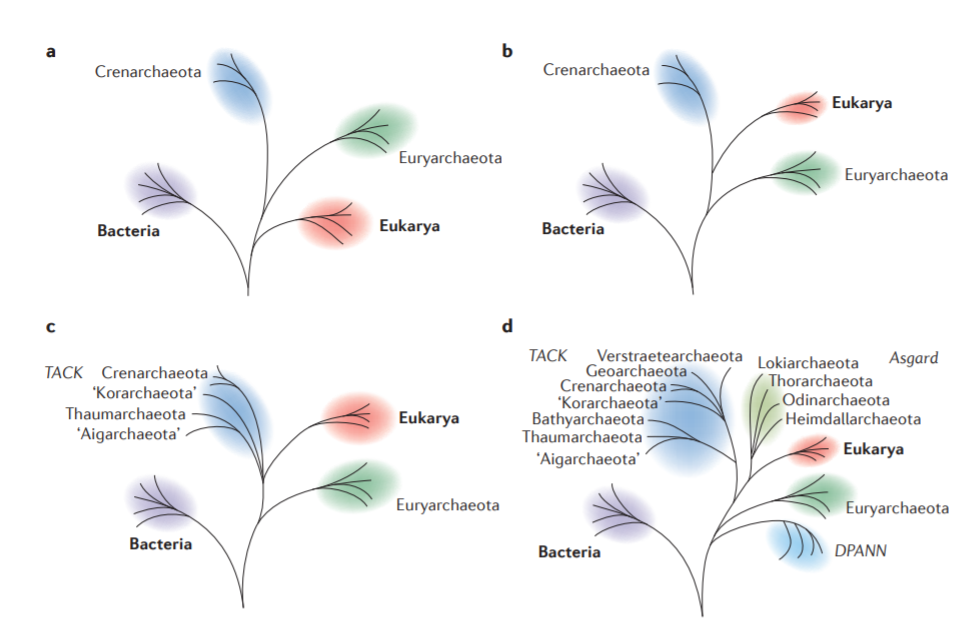

fDOG
feature-aware Directed OrtholoG search
22.03.2021
Vinh Tran
Orthology
Homology
- Paralogs <- duplication
- Orthologs <- speciation
Applications

RBH-based method
The origin of fDOG
HaMStR

HaMStR

 +
+
fDOG
How fDOG works

How good is fDOG
Benchmark data
- 78 taxa QfO 2018_04
- Human as reference species
- 20,996 human proteins as seed sequences
Benchmark method


- Compared using Quest for Orthologs - Challenge 6
How meaningful are the core ortholog groups

... in reflecting the species relationship
-
Topology test using IQ-TREE

(Topology rejected (-) when p-AU < 0.05, otherwise accepted (+))
-
18,067 core groups with more than 3 sequences
| Approach | Accepted | Rejected |
|---|---|---|
| No correction | 11,707 (64.80%) | 6,360 (35.20%) |
| Benjamini + Hochberg (BH) correction | 13,625 (75.41%) | 4,442 (24.59%) |
| Bonferroni correction | 16,204 (88.69%) | 2,043 (11.31%) |
How fast is fDOG
| Data set | Core compilation | Ortholog search | FAS calculation |
|---|---|---|---|
| 20,995 proteins | 19 hrs (*) | 67.5 hrs | 21 hrs |
| Q8WZ42 | 54 hrs (**) | 0.2 hrs | 20.5 hrs |
(*) fdogs.run using 64 CPUs on compute17 (2x AMD EPIC 7601 2.2Ghz, 32 cores)
(**) fdog.run using 1 CPU on compute12 (intel i7-6700K 4.0Ghz)

On average, each human protein needs:
-
212s for the core compilation
-
10s for the ortholog search
Note: number of core taxa and search taxa are the same (78 QfO taxa)
Pearson p-value < 2.2e-16
fdog.run VS fdogs.run

Runtime of 6 randomly selected proteins using 4 CPUs
An use-case: Where does the archaea locate

- The well-known three-domains tree of life
- Two-domains tree of life
- Eukaryota branches as sister to TACK superphylum
- Eukaryota originated from within (or as sister to) the Asgard archaea
- 48 core genes (FAS >= 0.75, present in at least 50% taxa of each superkingdom)
- Super-alignment of 139 sequences, 13,060 aa in length
- Tree reconstruction using IQ-TREE
- -m MFP: auto identify best fitting model with ModelFinder => LG+R9
- -bb 1000: ultrafast bootstrap approximation with 1000 replicates
- -bnni: reduce the risk of overestimating branch supports with UFBoot